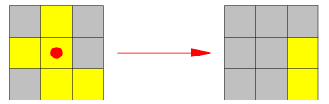
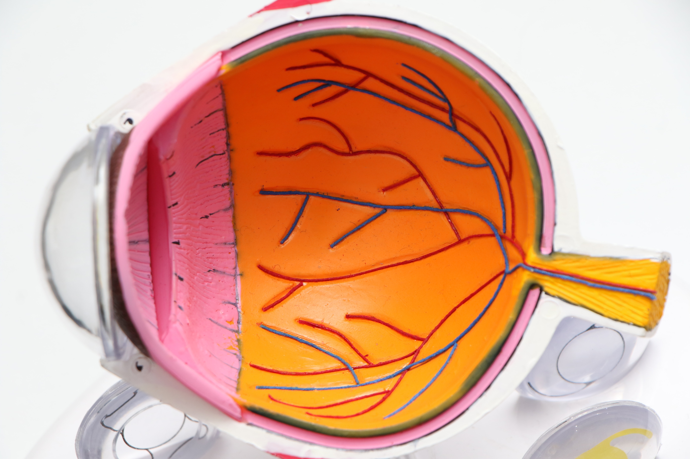
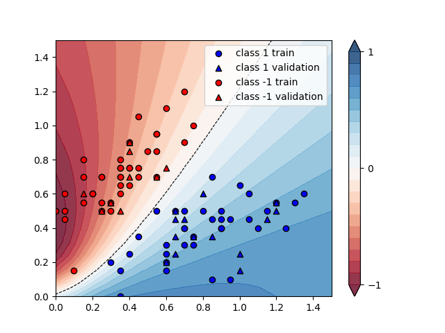
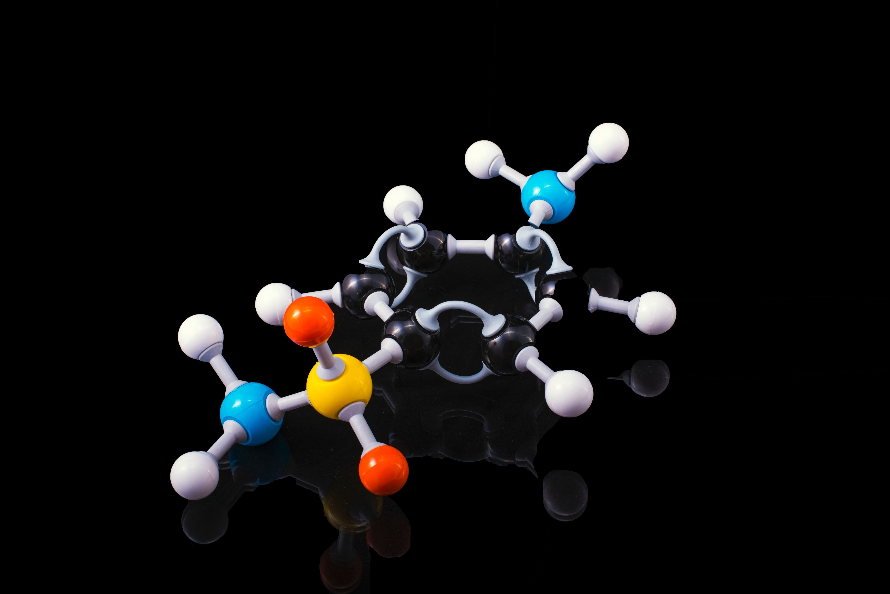
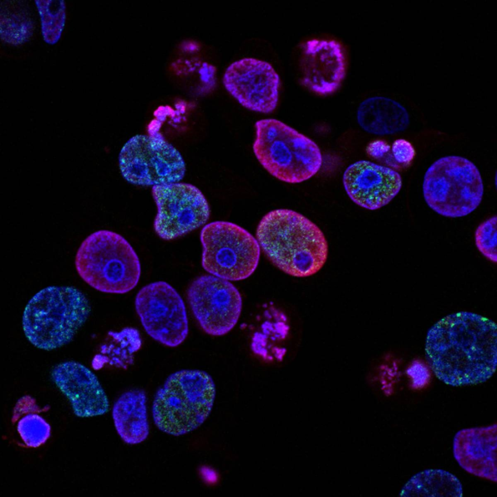
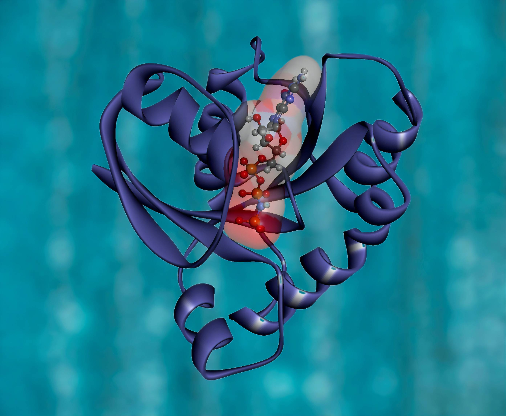

Atharva Vidwans
Some things About Me
Hello! Welcome to my Website.
My name is Atharva Vidwans. I recently completed my undergraduate studies at Pune University, renamed as Savatribai Phule Pune
University(SPPU), from India. Currently, I am working as a research intern in Quantum Computing under Prof. Pawel Gora from University of Warsaw, Poland.
Vehicle Routing Problem (VRP) is a combinatorial optimization problem important for real-world logistics and difficult (NP-hard) from a
computational perspective. Our goal for this research is to find optimal routes of a fleet of vehicles aiming to visit some number of locations on a gate-based Quantum Computer. There are
different variants of VRP, e.g., Capacitated Vehicle Routing Problem(CVRP), Capacitated Vehicle Routing Problem with Time Window(CVRPTW), multiple depots etc.
All of them are interesting areas for applications of quantum computers. In addition to research intern, currently I am
working as a part-time Subject Matter Expert in Advance Mathematics at Chegg Inc.
My theoretical research areas are Machine Learning models and Quantum algorithm development.
Whereas my practical and application-based research interests lie in Medical Imaging
and healthcare development, and Autonomous Driving Vehicles.
I love to solve problems, whether its finding the most elegant piece of code, or discovering solutions.
Apart from research and academia, my hobbies include blog writing, playing soccer, reading novels (a great admirer
of Agatha Christie).
Below are some of my research projects(apart from internship) in Machine Learning and Quantum Computing, which
will benefit my professional career and academics. Also check out my Resume
and other supporting links attached
at the top right corner!
Simulating the Hamiltonian for calculating Ground State Energy in Pennylane
The evolution of systems is governed by a particular type of operator called a Hamiltonian. Finding the
Ground state energy of a system is of immense importance in various fields like many-body physics etc.
This project aims at calculating the Ground state energy of the entered Hamiltonian using a Quantum
device.
A Quantum Variant for solving Lights Out problem

Lights Out is a simple combinatorial game. This algorithm successfully formulates the problem in Quantum
Domain. It solves it using 'Quantum Lights Out Solver', which exploits the Quantum phenomenon for
solving a Lights out problem on a Quantum Device.
Optical Coherence Tomography for detecting Retinal Conditions

Retinal optical coherence tomography (OCT) is an imaging technique used to capture high-resolution cross
sections of the retinas of living patients. Analysis and interpretation of these high resolution images
takes up a significant amount of time. This algorithm successfully deals with detecting and classifying
the retinal diseases using OCT scans.
Cognitive Computing for Autonomous Vehicles
Compared to conventional algorithms for Autonomous vehicles, Cognitive Computing algorithms prove to be much
better in Self Driving Cars as they reduce the human intervention during each step. My chapter called
'Cognitive Computing in Autonomous Vehicles' is been published in the book 'Cognitive Computing for Human-Robot Interaction'
in ElseVier Journal. As the book is not free to public access I have attached my chapter from the book.
QML using Variational Quantum Classifier in Pennylane

Variational circuits play a role in quantum machine learning akin to that of neural networks in classical
machine learning. The below algorithm is executed in pennylane quantum language. The input to the program
is a image with reduced dimensions to 3 features using PCA and categorical encoding of -1,0 and 1 are used.
Whereas the output is the string of predicted labels based on the test dimension.
Lithium Hydride Molecule Simulation in Qiskit using VQE

VQE's magic comes from outsourcing some of the problem's processing workload to a classical computer. The
algorithm starts with a parameterized quantum circuit called an ansatz (a best guess) then finds the
optimal parameters for this circuit using a classical optimizer. This algorithm simulates a Lithium Hydride
molecule for calculating the ground state energy. It is of fundamental importance in Chemistry.
Skin Tumor classification model

Skin Cancer forms an important part of Dermitology. Not all cancers are Malignant. And thus based on their
severity they can be treated differently. This algorithm mainly addresses the issue of classification
of skin cancer using Machine Learning.
COVID Genomic Sequence Analysis and Comparison with SARS, MERS, EBOLA, ZIKA and HIV

Genome Sequencing is the process of determining the entirety, or nearly the entirety, of the DNA sequence
of an organism's genome at a single time. PDB and FASTA data are used for this analysis.
This algorithm compares and analyses different DNA and RNA sequences of various viruses like SARS, MERS,
EBOLA, ZIKA and HIV and concludes the similarity to COVID 19.
Analysing the effect of FFT on Light Curves from Keplar Mission for Classification of ExoPlanets
The quest for finding life and habitat in the universe other than earth has been going on since long.
To uncover it, NASA's Kepler
Mission captured data of brightness of stars which are called light curves. Aim of this project
is to analyse the Light Curves and improve the ExoPlanets Classification accuracy for ML models
using FFT and Recurrence plot.
End-to-End Deep Learning model for Autonomous Vehicles
Behavioural cloning is literally cloning the behaviour of the driver. Unlike the usual methods
in autonomous vehicles, which depends on computer vision techniques, for Behavioural Cloning the idea is to train the CNN
to mimic the driver based on training data from driver's driving.
The data for the CNN is collected from the Simulator and then feed to the Behavioural Cloning model.
Human intervention is reduced drastically by using this algorithm. Thereby reducing human error in the pipeline.